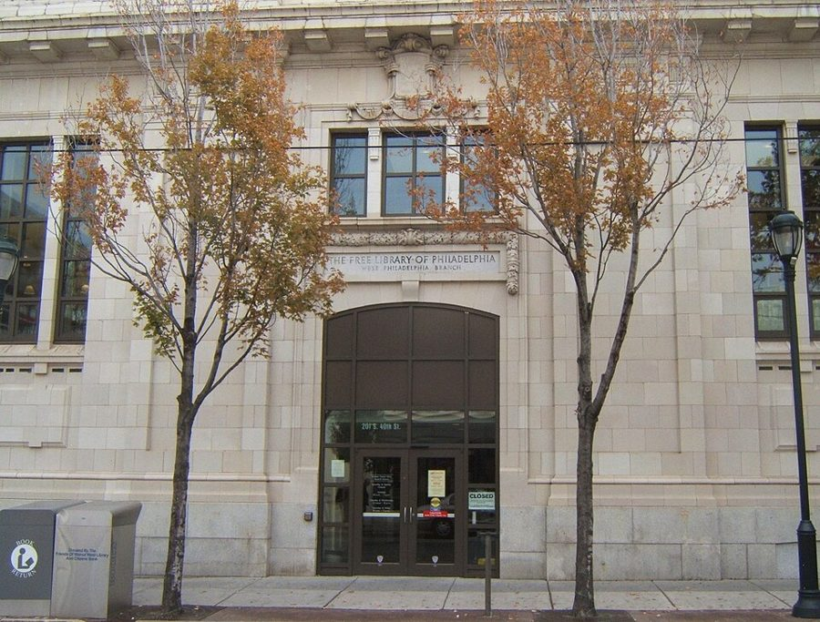
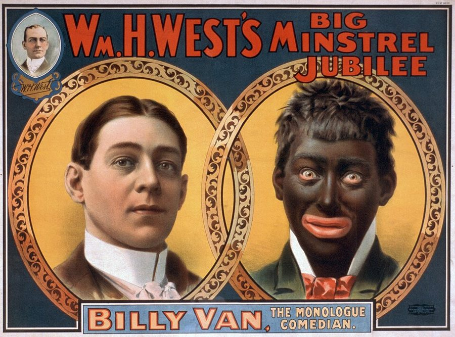
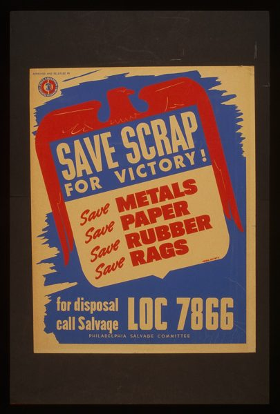
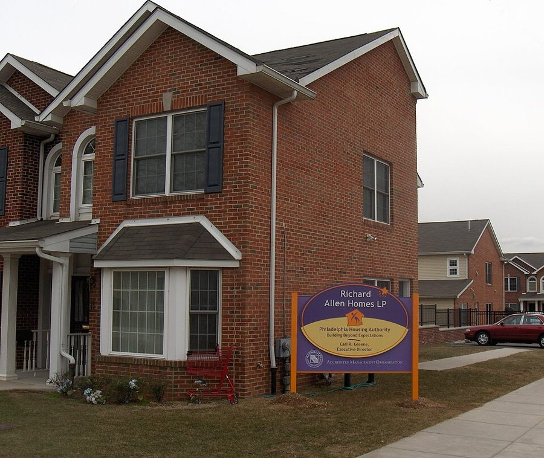

这一页在做什么
序言说他为什么七十四岁才写自传：家人催，Sowell 劝，也免得别人歪曲他的过去；他举的例子是有位前部长说他和 Sowell「不知道穷是什么滋味」。正文从五岁写到初中毕业：母亲一个人带两个孩子，从西费城搬进北费城的公共住房，靠打零工、救济和精打细算过日子。读的时候抓两条线：母亲怎么管孩子；他怎么把四十年代的街区和今天对比，又从这种对比里引出经济学的道理。

费城免费图书馆西费城分馆，地址是南 40 街 201 号，就在 40 街和 Walnut 街的路口。§2 第 29 段：母亲带兄妹俩办了借书证，周六走十八个街区来这里，抱回四五本书。照片摄于 2010 年。Davidt8，公有领域，维基共享资源 读之前：这一页在他一生的哪里
全书开头。序言写于 2010 年，那时 Williams 七十四岁，妻子 Connie 已经去世。正文从 1941 年他五岁时写起，写到 1951 年初中毕业。这十年先是第二次世界大战，然后是战后的繁荣。宾夕法尼亚州的法律不许学校按种族分开，但黑人和白人住在不同的街区，学校也就跟着分开了。
读的时候带着这几个问题。不用先找答案，读完回来对照「检查一下理解」。
序言里那位部长说他「不知道穷是什么滋味」。他用什么来反驳？反驳的是哪一点？序言
母亲一次次替孩子拿主意：上哪所学校、演不演戏、去不去船厂挣钱。她的规矩背后是什么想法？§1
他说四十年代的公共住房是另一番样子。他列了哪些不同？哪些是亲眼看见的，哪些是他的推论？§2
初中的他是好学生还是捣蛋鬼？老师们怎么看他？§3
分节地图
这一页是原书的序言和第 1 章的前三节（章首没有小标题，本站记作 §1）。粗体是这一节的地标；斜体是英文这一节开头的几个词，在 Kindle 里搜它就能跳到那里，错字照电子书原样。读完打个勾。
为什么现在写，Harris 的一句话约 600 词 DESPITE NUMEROUS PAST SUGGESTIONS THAT I … 写作的缘由。第 4–5 段是全书的一个靶子，后面还会回到「黑人保守派」挨的批评。 五岁入学，母亲和不在场的父亲约 1100 词 FIVE YEARS OLD IS MY … 西费城的家和学校，母亲的规矩；第 18 段起转到父亲和家里的钱。 纽约的亲戚，搬进 Richard Allen约 1700 词 What was it like to grow … 第 30 段起是北费城。留意他怎么拿当年的街区比今天，第 39 段起讲成了经济学。 初中班主任 Meekins 太太约 700 词 We lived in North Philadelphia one … 成绩领先带来的一好一坏。最后一段已经引出下一节的帽子厂。
出场的人
按出场顺序。书里的家人和老师只写书里说的；公众人物写生卒年。
Connie 作者的妻子 序言第 2 段：结婚 48 年，写这本书时已经去世。催他写自传的人之一。
Devyn 作者的女儿 序言第 2 段：劝他趁早写，「免得写成小说」。
Thomas Sowell 1930 年生，经济学家，公众人物 作者几十年的朋友和同事。序言第 3 段：是他提醒作者，这一生有不少「公共性」，值得写下来。
Patricia Roberts Harris 1924–1985，公众人物 卡特政府的住房部长和卫生教育福利部长，第一位进入美国内阁的黑人女性。序言第 4 段：她说 Sowell 和 Williams 是中产阶级，不知道穷是什么样。
Catherine 作者的妹妹 第 9 段起。书里说她比作者小一岁（第 14 段），入学时她上幼儿园、他上一年级。
Mom 作者的母亲 书里一直叫 Mom 或 my mother。高中没读完，一个人带两个孩子，给人帮佣。这一页的主角之一。
父亲 书里没写名字 第 18 段起：作者五六岁时只见他来过一次；母亲告上法庭后他付过一点抚养费，不多也不长（第 20 段），后来去了洛杉矶。
Lugenia Williams 作者的祖母（父亲的母亲） 第 19 段：替儿子不负责任感到羞愧，常给孩子零花钱；玩地下彩票，手气很好。
Carl Green 作者的表哥 第 30 段：比他大三岁，住在北费城祖母那条街，一起玩、一起闯祸；第 38 段两人拉着小车替人送货挣钱。
Viola Meekins 初中班主任，教英语 第 42 段：黑人老师，对语法一丝不苟，撕过他的作文，也让他跑腿办事。
Jack Friedman 帽子厂老板 第 49 段：U-Needa-Hat 女帽厂的老板。作者放学后给他送帽子，被留堂迟到了，就对他撒了个谎保住这份工。
背景：作者默认你知道的事
按在书里出现的顺序排，标题前是节号。这里只讲事情本身，作者怎么看放在后面几节。
§1 法律上不分校，实际上分开宾夕法尼亚州 1881 年修改学校法，禁止公立学校按种族分开。但费城一直没认真执行：1937 年以前，黑人教师只能在黑人学校教书；黑人和白人住在不同街区，学生按住址分进学校，学校也就自然分开了；住在白人学校学区里的黑人家庭，校方也会劝他们去别处。第 10 段就是这样：Hamilton 小学在他家的学区里，学校却劝母亲送孩子去黑人多的 Hoffman 小学，「怕他们不自在」。母亲搬出学区的规定，硬是让兄妹俩成了 Hamilton 的第一批黑人学生。
§1 黑脸滑稽剧
约 1900 年一个滑稽剧团的海报：左边是演员 Billy Van 本人，右边是他涂黑脸上台的样子。Strobridge & Co. Lith，公有领域，维基共享资源 minstrel show 是十九世纪起在美国流行的舞台表演：白人演员用烧焦的软木（burnt cork）把脸涂黑，扮成愚蠢、懒散的黑人唱歌讲笑话。到二十世纪中期，学校和社团还常排这种戏。今天它被看作对黑人最典型的丑化。第 13 段：学校选作者去演，母亲不许，还回了一句：要涂黑脸，找个白人孩子去涂。
§1 战时的废纸回收
二战时费城废品回收委员会的海报：为了胜利，回收金属、纸、橡胶、破布。Work Projects Administration Poster Collection，公有领域，维基共享资源 美国 1941 年底参战，物资紧缺，政府号召全民回收废金属、废纸、橡胶。学校常组织孩子挨家挨户收旧报纸，叫 paper drive（drive 是「募集运动」）。第 14 段里比哪个班的纸堆得高，赢了提前放学；Hitler（希特勒）和 Hideki Tojo（东条英机）是德国和日本的战时领导人。
§1 地下彩票和救济the numbers（也叫 policy）是二十世纪上半叶美国黑人街区最流行的非法赌博：每天押三个数字，赌注可以只有几分钱，中奖号码取自报纸上公布的某个数字，由街头的收注人（numbers runner）收钱派彩。违法，但到处都有人玩（第 19 段）。relief 是三四十年代对政府救济的通称（第 21 段）。1935 年的《社会保障法》设了「抚养未成年子女补助」（Aid to Dependent Children），主要给父亲不在、没人养家的孩子发钱，就是后来所说的 welfare。
§1 Sun 船厂第 20 段，几个姨妈战时在 Sun 船厂做工，工钱高。这是费城西南边 Chester 的一家造船厂，二战时大量造油轮，是全美雇用黑人最多的私营企业，还专门设了一个几乎全用黑人工人的四号船坞（Yard No. 4）。战时工厂缺人，黑人和女性第一次大批进了这类高工资的工作。母亲不去，宁可在家带孩子。
§2 the projects：公共住房
2010 年的 Richard Allen Homes：原来的楼拆掉以后，原址上重建的低层联排住宅。作者小时候住的是四层的砖楼。Davidt8，公有领域，维基共享资源 美国人说 the projects，指政府建给低收入家庭的公共住房（housing project），由各地的住房管理局（Housing Authority）出租。Richard Allen Homes 1941 年入住，在北费城 9 街到 12 街之间，北边是 Poplar 街（第 37 段），南边是 Fairmount 大道，五十多栋楼、一千三百多套公寓，以费城一位黑人牧师的名字命名。刚建成时是样板工程，后来年久失修，八九十年代成了毒品和枪击出名的地方，九十年代起分期拆除重建。第 31 段他说的「后来变成的样子」，指的就是这一段。
§2 北费城的小店和 1964 年的骚乱第 37–38 段的 Poplar 街、Marshall 街，多是犹太人开的杂货店、药店、服装店，也有几家黑人开的。第 38 段提到的 Columbia 大道，1964 年 8 月发生了一场骚乱：一次警察和黑人夫妇的冲突传成了「警察打死孕妇」的谣言，三天里两百多家商店被抢被烧，多是白人开的，很多再也没有开门。第 39 段说的「六十年代的骚乱」，费城最出名的就是这一场。
§3 初中，和一年分两半那时费城的公立学校是小学六年、初中（junior high school）三年、高中三年；今天多改成 middle school。第 17 段说的「年级分 A 和 B」：一个年级分成上下两个半年，读完半年就升半级。他六年级上半年在 Spring Garden、下半年在 John Hancock，就是按这两半算的（换学校是因为搬家）。
先用中文过一遍：这一页的经济学
作者讲到经济学的地方，这里先从书外把道理讲一遍：它是什么、经济学一般怎么分析。它在这一页起什么作用，看每块最后一句。讲过的概念都汇总在经济学概念 。
序言 代际流动 intergenerational mobility 一个人长大后的收入和地位，在多大程度上由父母决定。常用两种量法：一种看「父母收入在最底层五分之一的孩子，长大后有多少能升到最顶层五分之一」；另一种看父母和子女收入的相关程度，越相关，流动性越低。还要分清两件事：「能不能爬上去」（有人做到了），和「爬上去的机会有多大」（多少人做到了）。一个国家可以前者为真、后者却不如别国。
在这一页： 序言第 6–7 段，作者说在美国，起点低也能到顶，这种流动性让全世界羡慕。今天的数据怎么说，见「对照今天」。
§2 成本转嫁：谁最后买单 cost pass-through / incidence 一笔成本落在谁身上，不看谁掏钱，看市场怎么分摊。给商店加一笔开支（保险、保安、铁闸），店主会尽量提价，或者降低货品和服务的质量；提不了价、又赚不回来，就关门或不来开店。经济学把这叫「归宿」（incidence），最常用来分析税：名义上向商家收的税，往往有一部分由顾客承担。像写代码时说的「复杂度不会消失，只会转移」，成本也一样。
在这一页： §2 第 39–41 段，作者用它解释：街区的犯罪最后由守法的穷居民买单。
街区犯罪多
第 39 段
店主多出的钱
保安、保险
铁闸、防弹玻璃
第 39–40 段
店还开着：东西更贵，货和服务更差
店不来开：居民跑远路去郊区买
店少了：孩子课后打工的机会少了
本站示意图：作者在 §2 第 39–41 段的推理。三条路的终点都是街区里的居民，不是作恶的人。 作者的论证，一步一步
四十年代，北费城黑人街区周围有兴旺的商业街，多是犹太人开的小店，也有黑人开的，店门外的水果摊没人看着也不怕偷。§2 第 37–38 段
后来高犯罪和六十年代的骚乱让这些商业几乎消失了。§2 第 39 段
犯罪的成本让黑人、白人老板都不愿来开店，因为作恶的人不分店主是黑是白；来了的就得多付保险、装铁闸，有的还雇保安、隔着防弹玻璃做生意。§2 第 39–40 段
这些成本由顾客承担：价格更高、货和服务更差；店不来开，穷居民就得自己花钱跑远路去郊区商场。§2 第 39–40 段
店少了，居民的工作机会也少了。他自己当年就在 Poplar 街的杂货店打工。§2 第 41 段
美国是不是「起点低也能到顶」的地方
主流看法： 经济学家用代际流动来量。多数跨国研究发现，美国父母和子女收入的相关程度高于加拿大和北欧，相对流动性偏低；Chetty 等人还发现美国国内各地差别很大。也有研究者（如 Winship）认为跨国比较高估了这个差距。
作者的看法： 不必从顶层附近起步也能到顶，这种流动性让世界羡慕；他拿自己和 Sowell 的出身作证（序言第 5–7 段）。
本站的评论： 这句话有两层。「能做到」这一层，他自己就是例子，没法否认；「让世界羡慕」是在和别国比，要靠跨国数据，书里没有给，今天的多数研究也不支持美国在这一点上领先。拿个人经历证明「可能」有力，拿来证明「常见」就不够了。读这本书时可以记着：他讲的是一条走得通的路，不一定是多数人走得通的路。
词与短语
你用 Kindle，单个生词长按就能查，这里只收词典帮不上的：每个词都认识、合起来不懂的说法，口语和俚语，那个年代的说法，反话。斜体小字是原句里连续的几个词，错字照电子书原样，搜它就能跳到那里。点「记下」收进词本。
序言 为什么现在写，Harris 的一句话
in the larger scheme of things
… important in the larger scheme of things …
从大处看
scheme 在这里不是「计划、阴谋」，是事物的整体格局。
the press of
… because of the press of so many …
……的压力，忙于……
press 作名词，指事情一件件压过来，不是「报刊」。
not the least of which
… factors, not the least of which was …
其中很重要的一条是
字面「其中不是最小的」，往轻里说，意思是最要紧的之一。
lest it end up as a work of fiction
… lest it end up as a …
免得写成小说
女儿的玩笑：再拖下去，记性坏了，写出来的就是编的了。下一句作者自己点破了这层意思。
not in the cards
… prospects for improvement are not in the cards …
不会有的事
来自算命的纸牌：牌面上没有，就是不会发生。作者拿自己的记性自嘲。
conventional wisdom
… taken challenging conventional wisdom, have angered …
通行的看法，大家都认的道理
经济学家 Galbraith 1958 年让这个说法流行起来，带一点「人云亦云」的意味。
call things as I see them
… called things as I have seen …
怎么看就怎么说，有话直说
原是棒球裁判的话（call 是判球）：看到是好球就判好球，不管谁高兴。
set the record straight
… me to set the record straight …
澄清事实，纠正别人的说法
record 是「记录」，把记错的改正过来。
Secretary of Health Education and Welfare
… former Secretary of Health Education and Welfare …
卫生、教育和福利部部长
美国内阁的一个部，1979 年立法拆出教育部，剩下的部分 1980 年改名卫生与公众服务部。
shrinking violet
… neither am I a shrinking violet …
畏畏缩缩、怕出头的人
紫罗兰长在暗处、花朵低垂，拿来比害羞的人。作者说自己不爱自夸，但也不装谦虚。
the envy of the world
… is the envy of the world …
让全世界羡慕的东西
envy 作名词，指被羡慕的对象，不是「嫉妒」这种情绪本身。
tell-all
… a complete, tell-all story of my …
把什么都抖出来的（回忆录）
名人回忆录的一类，专讲隐私和内幕。作者说这本书不是那种。
§1 五岁入学，母亲和不在场的父亲
minstrel play
… a part in a minstrel play …
黑脸滑稽戏
见「背景」。
put burnt cork on the face
… could put burnt cork on the face …
（用烧焦的软木）把脸涂黑
母亲的回答是反讽：既然这出戏要黑脸，那就让白人孩子去涂。
paper drive
… there would be paper drives to …
废纸募集运动
drive 在这里是「有组织的募集、运动」，如 blood drive（献血活动）。
domestic servant
… week as a domestic servant …
家佣，在别人家帮佣的人
Spam
… baked beans, Spam, or some other …
（品牌）午餐肉罐头
Hormel 公司 1937 年推出的罐头肉，便宜、不用冷藏，二战时大量供应军队，名气很大。
soapbox serial
… soapbox serial-or perhaps it was the …
（广播）肥皂剧连续剧
通常叫 soap opera：早年白天的广播连续剧多由肥皂公司赞助。soapbox 本义是街头演讲踩的肥皂箱，这里大概是混用了。
That was our clock.
… That was our clock. …
那就是我们的钟。
母亲的规矩：中午开着收音机，那个连续剧的音乐一响就出门回学校。广播节目准点开播，就拿它当钟。
tell on
… My sister would tell on me …
（向大人）告某人的状
housing project
… a large housing project in North …
公共住房小区
project 在这里不是「项目」。复数 the projects 单指公共住房，书名 Up from the Projects 就是「从公共住房里走出来」。
retarded
… with her retarded daughter …
智力障碍的
当时的通用说法，今天有冒犯性，改说 intellectual disability。
grades were divided into A and B
… grades were divided into A and B …
每个年级分上下两个半年
见「背景」最后一块。
the numbers
… but popular-and was quite lucky at it …
地下彩票
原文 the numbers 在引号里，搜它前后的词。见「背景」。
change for spending money
… some change for spending money …
几个零钱当零花
change 是零钱、硬币；spending money 是零花钱。
child-support payments
… court over child-support payments …
子女抚养费
离婚或分居后，不带孩子的一方按法院判决付的钱。
make do
… Mom could make do …
将就着过得去
bench warrant
… there was a bench warrant for his …
法官签发的拘捕令
bench 指法官席。多因不出庭、不执行判决（这里是不付抚养费）而签发。所以父亲回费城要「偷偷」来。
relief
… called relief at that time …
政府救济
不是「放松、宽慰」。见「背景」。
§2 纽约的亲戚，搬进 Richard Allen
crush
… had a ten-yearold's crush on her …
（小孩子的）暗恋
ten-yearold's 是扫描丢了连字符，应为 ten-year-old's。
carry a lot of currency
… rumors about them carried a lot of currency …
传得很广，很多人信
currency 本义是「流通」，钱叫 currency 也是因为它流通。
duplex
… stood some duplex-type buildings within the …
一栋楼分成两户的房子
whip someone's butt
… hairbrush and whipped our butts …
打屁股
口语。母亲用的是梳头的刷子。
the bottom line
… The bottom line: we didn't even …
结果是，说到底
原指账本最底下那行（净利润），引申为「最后的结论」。
as my mother put it
… less cultured, as my mother put …
用我母亲的话说
put 在这里是「措辞、表达」。作者特意说明「没那么有教养」是母亲的评价。
older cousin by three years
… My older cousin by three years …
比我大三岁的表哥
by 表示差多少。cousin 不分堂表、男女，这里从后文看是男孩。
not what they were to become
… not what they were to become …
还不是后来变成的那个样子
were to 表示「（从当时看）将来会」。后面破折号接着说后来变成了什么。
rumbles
… as fist fights were called, the …
（街头少年的）打群架
原文 rumbles 在引号里，搜它后面的词。四五十年代的俚语，《西区故事》（1957）里两个帮派约的那场群架就叫 the rumble。
pinochle, bid whist
… pinochle, or bid whist, while sipping …
两种纸牌游戏
bid whist 是先叫牌的惠斯特牌，在美国黑人社区特别流行。
zip gun
… a homemade pistol called a …
土制手枪
原文 zip gun 在引号里，紧跟这几个词后面。多用水管、门闩、橡皮筋拼成，只能打一发。
drive-by shooting
… killed in drive-by shootings …
开车经过时朝人开枪
八九十年代帮派枪击的典型方式，常误伤路人，这正是作者要比的。
Dewing them down
… a term not considered racist back then …
砍价，把价钱压下来
屏幕上的首字母 D 多半是扫描把 J 认错了。原词拿「犹太人会讨价还价」的刻板印象造了一个动词，今天公认是侮辱性的说法；作者自己也只说当时用它的人不觉得是种族歧视。
prey on
… the people who prey on the …
以……为猎物，欺压、打劫
equal-opportunity thugs
… prey on the businesses are equal-opportunity thugs …
一视同仁的暴徒
挖苦：借反歧视法规里的 equal opportunity（机会平等）一词，说作恶的人抢店时也不分店主是黑是白。
roll-down bars
… the purchase of iron roll-down bars …
卷帘铁闸
bulletproof plexiglass partitions
… from behind bulletproof plexiglass partitions …
防弹有机玻璃隔板
店员在隔板后面，商品从小窗口递出来。
wait on customers
… I waited on customers, delivered orders …
招呼顾客，给顾客拿货
wait on 是「伺候、服务」，不是「等候」。
§3 初中班主任 Meekins 太太
junior high school
… the start of junior high school …
初中
作者紧接着说今天叫 middle school。
home room teacher
… My home room teacher was …
班主任
home room 是每天早上点名、发通知的固定教室。
accelerated work
… gave me more accelerated work …
进度更快、更难的功课
trolley fare
… she'd give me trolley fare to …
有轨电车的车钱
他跑着去，把车钱省下来买吃的。
a stickler on
… Mrs. Meekins was a stickler on grammar …
在……上一丝不苟的人
a plate of beans
… action or a plate of beans …
一盘豆子
恶作剧：动词的定义是 action or a state of being，他让同学把 state of being 换成发音相近的 plate of beans。
have the class in an uproar
… I'd have the class in an …
让全班闹翻天
get the foolishness out of
… once I got the foolishness out of …
把那股胡闹的劲儿去掉
go places
… I was going to go places …
有出息，前途远大
不是「去很多地方」。
millinery
… at U-Needa-Hat millinery factory …
女帽（业）
厂名 U-Needa-Hat 是个谐音：You need a hat，「你需要一顶帽子」。
fall upon deaf ears
… but my pleas fell upon deaf ears …
说了也没人听
newly minted
… As a newly minted graduate of …
刚出炉的
mint 是造币，「新铸的」。这是书里照片的图注。
读不通的扫描错字：
… in the 1940s and 1 5os to … 应为 1950s。… elementary at i3th Street and … 应为 13th Street。… Back in the '4os the … 应为 '40s。… We lived at 8io-F Warnock … 门牌应为 810-F。… Graffiti and wonton property destruction … wonton 应为 wanton（肆意的），不是馄饨。… Poplar between loth and i3th … 应为 10th and 13th。… crime and the z96os riots … 应为 1960s。
和 Sowell 的书对照
Sowell 的自传 A Personal Odyssey 和书信集 A Man of Letters 本站都有导读。同一件事两边都写过的，摆在一起；说法不一样的并排列出，不判谁对。老站页面没有能直接跳到的锚点，链接到页，正文里写明在哪一节。
Harris 说他们「不知道穷是什么」
这本书 Harris 的话是对 Sowell 1981 年在《华盛顿邮报》上两篇 Blacker Than Thou 的回应，说两人是中产阶级，不知道穷是什么样（序言第 4–5 段）。
Letters 那两篇专栏收在书信集里。第二篇里，Sowell 已经引了「他们不知道穷是什么」这半句（出自专栏作家 Carl Rowan 转引 Harris 的话）并加以反驳；专栏登出后，《邮报》又登了一整版 Harris、Rowan 等人的回击。Letters 导读 03a，1981 年 2 月的两篇专栏 →
Odyssey 第 11 章第 8 节也写了这两篇专栏和随后整版的抨击，称 Harris 为卡特政府的前住房部长。Odyssey 导读 11b →
两边不一样： 这本书说那句话是在专栏之后的回应；书信集里那句话在专栏之前就有了，专栏是在反驳它。Williams 引的「是中产阶级、不知道穷是什么样」那一整句，Sowell 两本书里都没有。头衔一个写卫生教育福利部长、一个写住房部长，她两个职位都当过。
两人的父母都没读完高中
这本书 母亲是七个孩子里的老大，被外婆叫回家照看弟妹，没读完高中（§2 第 29 段）。
Letters 同一篇专栏里 Sowell 写：我们两人的父母，没有一个读完高中。Letters 导读 03a →
那片费城贫民区
这本书 北费城的 Richard Allen 公共住房和 Poplar 街一带的店铺（§1 第 17 段，§2 第 30–41 段）。
Odyssey Sowell 请一位也在费城长大的朋友和 Williams 夫妇吃饭。Walter 一个个报出费城贫民区的熟人，朋友一个也不认识；问清朋友住哪儿以后，Walter 说「我不知道那儿住着黑人」。这顿饭只在 Sowell 那边写了。Odyssey 导读 09b，第 23 节 →
从前的街区没有铁栏
这本书 四十年代的公共住房没有涂鸦，店铺把水果摆在门外不怕偷；如今的店要装卷帘铁闸、防弹隔板（§2 第 34–40 段）。
Letters 2002 年 2 月 Walter 给 Sowell 的电邮说的是同一个意思：PBS 节目里 1910 到 30 年代华盛顿黑人社区的老影像，没有涂鸦，窗上没有铁栏。不是同一个场合，是他几十年里一直在说的话。Letters 导读 05a，2002 年 2 月 16 日的电邮 →
对照今天
书里能拿今天的数据和研究检验的几个说法。每张卡的标签判的是标题里那句「书里的说法」；「今天」一栏的数字都联网核过，写了核对日期和依据。
成立 后来的数据和研究支持这个说法部分成立 一部分对，一部分要打折扣被改写 后来的事实推翻了它，或者完全变了样有争议 研究者至今看法不一书里的说法：要是能选，世界各地的人最想去的国家是美国
书里 作者说美国的经济流动性让人羡慕，这有助于解释为什么人们最想去的地方是美国（序言第 7 段）。
当时（2010） 盖洛普的全球调查里，想移民的人约四分之一首选美国（2007–2009 年约 24%）。
今天 美国仍排第一，但比例降到近二十年最低：2025 年想移民的人里 15% 首选美国，第二名加拿大 9%。调查问的是「想不想」，不是「会不会真去」。核对于 2026-10。依据：盖洛普 2025 年的全球移民意愿调查（访问 140 个国家的 14 万多名成年人）。
书里的说法：在美国，起点低也能到顶，这种流动性让世界羡慕
书里 作者说他的一生说明：知道一个人最后到了哪里，不等于知道他从哪里出发；美国不像许多社会，不必从顶层附近起步（序言第 6–7 段）。
当时（2010） 经济学家已在比较各国的代际流动。加拿大经济学家 Miles Corak 的估算里，美国父子收入的相关程度高于北欧和加拿大，也就是流动性更低。
今天 「起点低也能到顶」没错，作者自己就是例子；「让世界羡慕」要打折扣。Raj Chetty 等人 2014 年的研究：美国父母收入在最底层五分之一的孩子，长大后升到最顶层五分之一的约 7.5%，丹麦约 11.7%，加拿大约 13.5%。美国国内差别也很大，有的城市接近北欧，有的远低于全国平均。核对于 2026-10。依据：Chetty、Hendren、Kline、Saez，Where is the Land of Opportunity?（2014）；Corak 2016 年为斯坦福贫困与不平等中心写的报告；Winship，Economic Mobility in America（Archbridge 研究所，2018）。
另一边 经济学家 Scott Winship 2018 年为 Archbridge 研究所写的综述认为：早期的跨国比较把「收入差距大」和「流动性低」混在一起，较新的研究发现别国的流动性没那么高，美国的差距可能被高估了。
书里的说法：犯罪和六十年代的骚乱让黑人街区的商业几乎消失了
书里 作者说四十年代北费城兴旺的商业街，后来因为高犯罪和六十年代的骚乱几乎消失（§2 第 37–39 段）。
当时（1964） 1964 年 8 月 28–30 日，北费城 Columbia 大道一带骚乱三天，两百多家商店被毁或受损，多是白人开的，许多店再也没有开门。
今天 商业衰落是真的：《费城百科全书》说，当地许多商家在骚乱之后再没恢复，骚乱加快了街区原有的衰落。但同一条目认为，白人居民和工厂工作的外流，对街区长期衰落起的作用更大。那一段 Columbia 大道 1987 年改名 Cecil B. Moore 大道，纪念一位民权律师。核对于 2026-10。依据：The Encyclopedia of Greater Philadelphia 的 Columbia Avenue Riot (1964) 条目；维基百科 1964 Philadelphia race riot 条目。
另一边 社会学家 William Julius Wilson 在 When Work Disappears（1996）里把城市黑人街区的衰落主要归于工厂工作的流失，而不是骚乱和犯罪本身。
值得停下来的句子
in this country one needn't start out at, or anywhere near, the top in order to eventually reach it.— 序言第 7 段。本站译：在这个国家，一个人不必从顶层、甚至不必从顶层附近起步，最后也能到达顶层。
序言的主张压在这一句里，全书还会一再回到它。注意 needn't（不必），他说的是「可能」，不是「人人都能」；at, or anywhere near 是一个插入，把门槛又压低了一层。后面七章是他给这句话举的例子，也是他和批评者争论的地方。
if she only had one slice of bread, she would cut it into three pieces.— §1 第 20 段。本站译：哪怕只有一片面包，她也会切成三份。
母亲拒绝去船厂挣高工资时的话。三份：她自己和两个孩子。作者只是转述，不加评论，但这一页里母亲的每一条规矩，都能从这句话里找到来由：钱少可以将就，孩子不能没人管。
检查一下理解
先在心里答，再点开。答错的那题，回书里把对应那一节再读一遍。
1.（序言）作者为什么要特意说 Harris 的话「读者没有理由反驳」？ 因为读者不知道他和 Sowell 的出身。两人都生在很穷的家庭，Harris 却说他们不知道穷是什么。这本书的一个目的就是把出身摆出来，让人自己判断。
2.（§1）学校为什么劝母亲把孩子送去 Hoffman 小学？母亲凭什么不肯？ Hoffman 黑人学生多，学校说孩子在那里会「更自在」。母亲知道 Hamilton 在自家学区里，拐角那家犹太商人的孩子就在那里上学，所以坚持要上 Hamilton。
3.（§1）母亲为什么不去船厂挣更多的钱？家里靠什么过日子？ 她要留在家里带两个孩子。家里靠她一周几天的帮佣、父亲给过一阵的一点抚养费，父亲彻底不管以后，时断时续地领救济。
4.（§2）作者说四十年代的 Richard Allen 和后来不一样，他举了哪些例子？ 多数孩子父母双全，父亲上班；楼道和院子干净，管理处定期查房；夏夜有人睡在外面，很多人家到深夜才锁门；帮派打架多用棍棒、拳头和刀，不卷进去就没事。
5.（§2）equal-opportunity thugs 是什么意思？作者拿它说明什么？ 挖苦的说法：作恶的人抢店不分店主是黑是白。他要说明，在高犯罪街区开店的成本对谁都一样高，所以黑人老板也不会来，最后吃亏的是街区里的穷居民。
6.（§3）成绩领先给他带来了什么「好处」和「坏处」？ 好处是老师器重他，给他更难的功课，派他去办事。坏处是他在课上捣乱，捉弄成绩差的同学，几次被留校、请家长。
用一句话说这一页，写给一个没读过的人。
读完想一想
想一想：母亲放着船厂的高工资不挣，宁可一周只帮佣几天、日子过得紧，也要在家看着孩子。换成你，会怎么选？
几种看法 作者显然佩服母亲，这一页里她的每条规矩都在说：钱少可以将就，孩子不能没人管。另一种看法是，多挣的钱也能给孩子更好的生活，战时许多母亲正是靠进工厂养家。今天美国的福利政策也在两头摇摆：1996 年的改革要求领救济的人去工作，批评者说这让单亲母亲顾不上孩子。
想一想：同一片公共住房，四十年代干净安全，后来毒品枪声不断。作者在这一页只摆出了对比。你觉得变化的原因是什么？
几种看法 作者在这一页指出了一处不同：那时多数孩子父母双全。社会学家 William Julius Wilson 在 When Work Disappears（1996）里强调另一面：工厂工作从城市黑人街区大批流失。还有人怪住房政策本身：把最穷的家庭集中在一处，管理经费又跟不上。这本书后面会给出作者自己的解释。
精彩回顾
读过又忘了，从这里想起来。挑的是这一页最值得记住的人、场面和说法，不按原书顺序；每条后面是节号，想细看就回书里那一节。全书各页的这一节都收在全书回顾 。
一句话： 穷，但不觉得自己穷：一个说一不二的母亲，带着两个孩子从西费城搬进北费城的公共住房。
「不知道穷是什么滋味」 卡特时代的部长 Harris 这样说他和 Sowell。序言拿这句话说明为什么要自己讲出身：两人其实都生在很穷的家庭。
序言 一片面包切三份 姨妈们劝母亲去船厂挣钱，她说要在家带孩子，哪怕只有一片面包也切成三份。
§1 让白人孩子去涂黑脸 学校选他演黑脸滑稽戏，母亲不许：要涂黑脸，找个白人孩子去。
§1 收音机就是钟 母亲去帮佣的日子，兄妹俩中午回家吃她留在暖气口上的罐头，听到肥皂剧的音乐响起，就该回学校了。
§1 不分黑白的暴徒 四十年代的北费城商店林立；后来犯罪和骚乱把店赶走，保安和铁闸的钱最后落在穷居民头上。
§2 一盘豆子 他教同学把动词的定义 state of being 说成 plate of beans，全班哄笑，Meekins 太太知道是谁干的。
§3